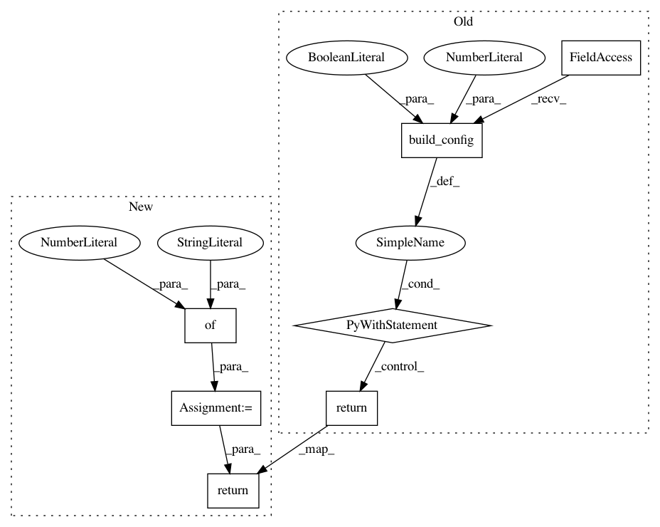

0833b07b41499060d3968a84085979e4fccb8989,topi/python/topi/x86/tensor_intrin.py,,dot_16x1x16_uint8_int8_int32_cascadelake,#,199
Before Change
// body, reset, update
return _instr(0), _instr(1), _instr(2)
with tvm.target.build_config(offset_factor=1, partition_const_loop=True):
return te.decl_tensor_intrin(C.op, _intrin_func, binds={data:a_buffer, kernel:b_buffer})
After Change
// body, reset, update
return _instr(0), _instr(1), _instr(2)
buffer_params = {"offset_factor" : 1}
return te.decl_tensor_intrin(
C.op, _intrin_func, binds={data:a_buffer, kernel:b_buffer},
default_buffer_params=buffer_params)
In pattern: SUPERPATTERN
Frequency: 5
Non-data size: 7
Instances
Project Name: apache/incubator-tvm
Commit Name: 0833b07b41499060d3968a84085979e4fccb8989
Time: 2020-05-23
Author: tqchen@users.noreply.github.com
File Name: topi/python/topi/x86/tensor_intrin.py
Class Name:
Method Name: dot_16x1x16_uint8_int8_int32_cascadelake
Project Name: apache/incubator-tvm
Commit Name: b2640260cd06e9e48c4713407e60218f66e337c4
Time: 2020-05-25
Author: tqchen@users.noreply.github.com
File Name: topi/python/topi/arm_cpu/tensor_intrin.py
Class Name:
Method Name: dot_int8_int8_int32
Project Name: apache/incubator-tvm
Commit Name: 0833b07b41499060d3968a84085979e4fccb8989
Time: 2020-05-23
Author: tqchen@users.noreply.github.com
File Name: topi/python/topi/x86/tensor_intrin.py
Class Name:
Method Name: dot_16x1x16_uint8_int8_int16
Project Name: apache/incubator-tvm
Commit Name: 0833b07b41499060d3968a84085979e4fccb8989
Time: 2020-05-23
Author: tqchen@users.noreply.github.com
File Name: topi/python/topi/x86/tensor_intrin.py
Class Name:
Method Name: dot_16x1x16_uint8_int8_int32_skylake
Project Name: apache/incubator-tvm
Commit Name: b2640260cd06e9e48c4713407e60218f66e337c4
Time: 2020-05-25
Author: tqchen@users.noreply.github.com
File Name: topi/python/topi/arm_cpu/bitserial_conv2d.py
Class Name:
Method Name: _intrin_popcount